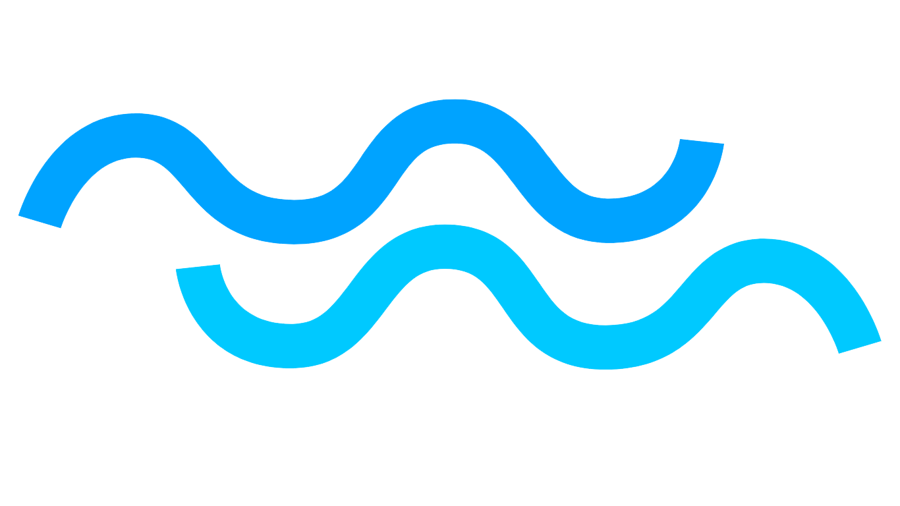

Principais Ameaças aos Oceanos
Este conteúdo tem como objetivo educar os leitores sobre as principais ameaças que os oceanos enfrentam atualmente, destacando os impactos negativos dessas ameaças nos ecossistemas marinhos e na vida humana, e incentivando ações práticas para mitigar esses problemas.
Os oceanos são essenciais para a vida na Terra, desempenhando um papel crucial na regulação do clima, na produção de oxigênio e na sustentação de uma rica biodiversidade. No entanto, os oceanos estão sob uma pressão crescente devido às atividades humanas. Poluição plástica, pesca excessiva, acidificação, aumento da temperatura e destruição de habitats marinhos são algumas das ameaças que colocam em risco a saúde dos oceanos e, por consequência, o bem-estar de todas as formas de vida que dependem deles. Entender essas ameaças é o primeiro passo para implementar ações eficazes de conservação e proteção dos oceanos.
Poluição Plástica
A poluição plástica é uma das ameaças mais visíveis e devastadoras aos oceanos. Milhões de toneladas de plástico entram nos oceanos todos os anos, causando danos significativos à vida marinha. Animais marinhos, como tartarugas, peixes e aves, confundem plásticos com alimentos, levando à ingestão de materiais tóxicos que podem resultar em morte por inanição ou envenenamento. Além disso, os microplásticos, fragmentos minúsculos resultantes da degradação de plásticos maiores, estão se acumulando na cadeia alimentar, potencialmente afetando a saúde humana.
Dados sobre a Poluição Plástica
| Aspecto | Detalhe |
|---|---|
| Volume de Plástico | Milhões de toneladas entram nos oceanos anualmente |
| Impacto na Vida Marinha | Ingestão de plásticos pode levar à morte por inanição ou envenenamento |
| Microplásticos | Fragmentos minúsculos acumulam-se na cadeia alimentar |
Pesca Excessiva
A pesca excessiva é a captura de peixes em uma taxa que excede a capacidade dos peixes de se reproduzirem. Isso leva ao esgotamento das populações de peixes, afetando não apenas a biodiversidade marinha, mas também a segurança alimentar de milhões de pessoas que dependem do peixe como uma fonte primária de proteína. Além disso, práticas de pesca destrutivas, como a pesca de arrasto de fundo, danificam habitats marinhos sensíveis, como recifes de corais e fundos marinhos.
Dados sobre a Pesca Excessiva
| Aspecto | Detalhe |
|---|---|
| Taxa de Captura | Excede a capacidade de reprodução dos peixes |
| Impacto na Biodiversidade | Redução das populações de peixes e impacto na cadeia alimentar |
| Pesca Destrutiva | Danos a habitats marinhos sensíveis, como recifes de corais |
Acidificação dos Oceanos
A acidificação dos oceanos é causada pelo aumento da absorção de dióxido de carbono (CO2) da atmosfera pelos oceanos. Isso resulta na formação de ácido carbônico, que reduz o pH da água do mar, tornando-a mais ácida. A acidificação tem efeitos prejudiciais sobre organismos marinhos que dependem do carbonato de cálcio para formar suas conchas e esqueletos, como corais, moluscos e alguns plânctons. A diminuição dessas populações pode ter repercussões em toda a cadeia alimentar marinha.
Dados sobre a Acidificação dos Oceanos
| Aspecto | Detalhe |
|---|---|
| Absorção de CO2 | Aumento da absorção de CO2 pela água do mar |
| Formação de Ácido | Redução do pH da água do mar |
| Impacto nos Organismos | Prejuízo para corais, moluscos e plânctons |
Aquecimento Global e Mudanças Climáticas
O aumento da temperatura global está causando um aquecimento significativo dos oceanos. Isso afeta a distribuição das espécies marinhas, causa o branqueamento de corais e contribui para o derretimento das calotas polares e geleiras, resultando no aumento do nível do mar. As mudanças climáticas também intensificam eventos climáticos extremos, como furacões e tempestades, que podem causar danos devastadores aos ecossistemas costeiros e comunidades humanas.
Dados sobre Aquecimento Global e Mudanças Climáticas
| Aspecto | Detalhe |
|---|---|
| Aquecimento dos Oceanos | Distribuição alterada das espécies marinhas |
| Branqueamento de Corais | Corais perdem suas cores e saúde |
| Derretimento das Calotas Polares | Aumento do nível do mar |
| Eventos Climáticos Extremes | Intensificação de furacões e tempestades |
Destruição de Habitats Marinhos
A destruição de habitats marinhos, como manguezais, recifes de corais e pastagens marinhas, é uma ameaça significativa para a biodiversidade oceânica. Esses habitats são essenciais para a reprodução, alimentação e abrigo de muitas espécies marinhas. A destruição desses ecossistemas é frequentemente causada por atividades humanas, como a urbanização costeira, a agricultura e a pesca destrutiva, levando à perda de biodiversidade e à degradação dos serviços ecossistêmicos.
Dados sobre a Destruição de Habitats Marinhos
| Aspecto | Detalhe |
|---|---|
| Habitat | Manguezais, recifes de corais, pastagens marinhas |
| Função | Reprodução, alimentação e abrigo para espécies marinhas |
| Causas | Urbanização costeira, agricultura, pesca destrutiva |
Conclusão
As ameaças aos oceanos são numerosas e complexas, resultando de uma combinação de fatores naturais e antropogênicos. A proteção dos oceanos é uma responsabilidade compartilhada que exige ações coordenadas a nível global, regional e local. A conscientização sobre essas ameaças e a implementação de medidas de conservação são cruciais para garantir a sustentabilidade dos ecossistemas marinhos e o bem-estar das futuras gerações.